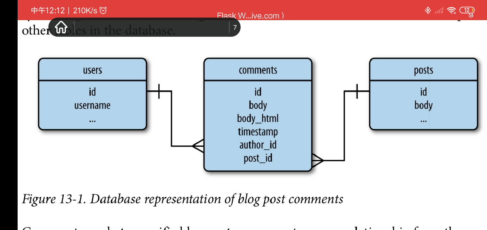
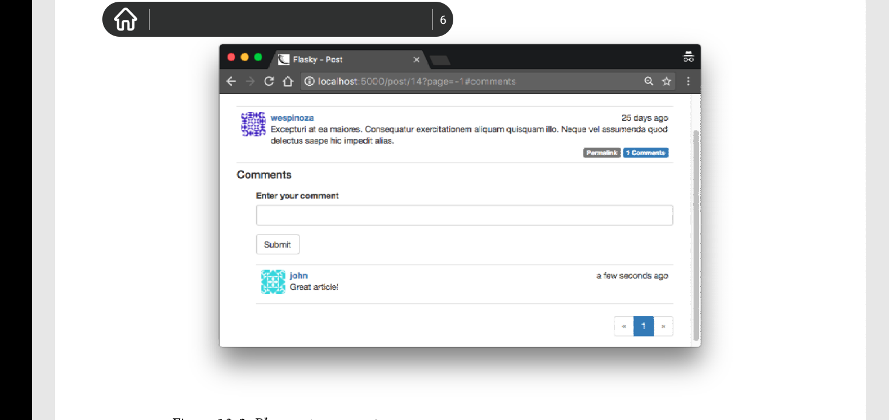
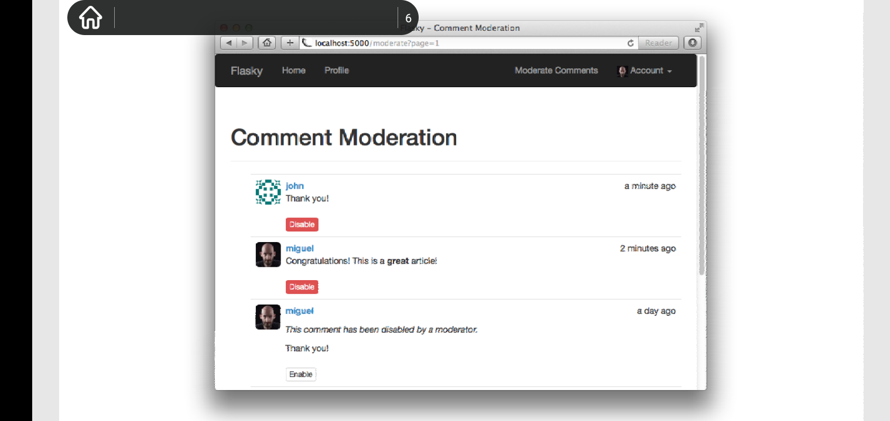

Chapter 13: User Comments
Overview
一个社交网站成功的关键在于允许用户之间交流。本章，你将学习如何实现用户评论系统。本章用到的技术可以直接应用到大量社交网站中。
Database Representation of Comments
评论模型类似于博客模型。两者都有body, author, timestamp,且在改版app中，两者都是用Markdown书写的。以下是comments表的原理图，以及它和其他表的关系:

评论附属于指定的博客，因此定义由posts表指向comments表的一对多关系。该关系可以用来获取与指定博客关联的评论列表。
而且,users表和comments表处于一对多关系。该关系可以用来获取所有由指定用户发布的评论列表。可以在用户配置界面显示该用户总共发布了多少评论。以下是Comment模型的定义:
# app/models.py: comment model
class Comment(db.Model):
__tablename__ = "comments"
id = db.Column(db.Integer, primary_key=True)
body = db.Column(db.Text)
body_html = db.Column(db.Text)
timestamp = db.Column(db.DateTime, index=True, default=datetime.utcnow)
disabled = db.Column(db.Boolean)
author_id = db.Column(db.Integer, db.ForeignKey('users.id'))
post_id = db.Column(db.Integer, db.ForeignKey('posts.id'))
@staticmethod
def on_changed_body(target, value, oldvalue, initiator):
allowed_tags = ['a', 'abbr', 'acronym', 'em', 'i', 'strong']
target.body_html = bleach.linkify(bleach.clean(
markdown(value, output_format='html'),
tags=allowed_tags, strip=True))
db.event.listen(Comment.body, 'set', Comment.on_changed_body)
Comment表的字段几乎和Post表的相同。区别之一是Comments表使用Boolean字段disabled，来让内容管理员限制不合适的或无礼的评论。像posts表一样， comments表也定义了一个事件触发器，一旦body字段被修改，该触发器自动被调用，来将body中的markdown文本转换成html，并存入body_html字段中。该过程基本和posts表的相同，但是因为评论趋于短小精悍，因此转换过程中使用到的白名单html tags受到更多的限制，不允许使用p 标签，只能使用字符格式化标签。
为了数据库更新，User表和Post表必须加入一对多关系属性。以下是更新后的模型:
# app/models.py: one-to-many relationship from users and posts to comments
class User(db.Model):
#....
comments = db.relationship('Comment', backref="author", lazy="dynamic")
class Post(db.Model):
#...
comments = db.relationship('Comment', backref="post", lazy="dynamic")
Comments Submission and Display
在该版本app中，评论显示在单独的博客页面，该页面在第11章时添加了独立的分享链接。评论提交表单也显示在该页面上。以下是用于输入评论的表单:
# app/main/forms.py: comments input form
class CommentForm(FlaskForm):
body = StringField('', validators=[DataRequired()])
submit = SubmitFiled('Submit')
以下是添加了评论功能的/post/<int:id>路由:
# app/main/views.py: blog post comments support
@main.route('/post/<int:id>', method=['GET', 'POST'])
def post(id):
post = Post.query.get_or_404(id)
form = CommentForm()
if form.validate_on_submit():
comment = Comment(body=form.body.data,
post=post,
author=current_user._get_current_object())
db.session.add(comment)
db.session.commit()
flash('Your comment has been published.')
return redirect(url_for('.post', id=post.id, page=-1))
page = request.args.get('page', 1, type=int)
if page == -1:
page = (post.comments.count() -1) // \
current_app.config['FLASKY_COMMENTS_PER_PAGE'] + 1 # 这里的//符号代表整除
pagination = post.comments.order_by(Comment.timestamp.asc()).paginate(
page, per_page=current_app.config['FLASKY_COMMENTS_PER_PAGE'],
error_out=False)
comments = pagination.items
return render_template('posts.html', posts=[post], form=form, comments=comments, pagination=pagination)
该视图函数实例化comment 表单，并将它发送到post.html模版用来渲染。当表单提交后，插入一条新评论的逻辑类似于博客中实现的。类似的，在Post模型中，不能将current_user直接赋值给评论的author字段，因为current_user只是一个上下文变量代理对象。通过使用表达式current_user._get_current_object()来获取实际的User对象。
评论以他们的timestamp字段按时间先后顺序来排列，因此新评论总是会被添加到列表的底部。当新评论被键入时，终结请求的重定向指向相同的URL，但是url_for()函数设置page为-1, 该值代表一个特殊的页号，用于请求最后一页评论，这样最近的评论可以显示在页面上。当页号从请求字符串中获取时，并且其值为-1, 那么会将评论数量和每页包含的评论数进行运算，来获得实际的页号。
通过post.comments关系字段来获取和指定博客相关的评论列表，并使用timestamp字段来排序，而且使用和之前博客使用到的相同技术来分页。comments和pagination被发送到模版中用于渲染。通过向config.py添加FLASKY_COMMENTS_PER_PAGE变量来控制每页显示的评论数量。
用于渲染评论的模版被定义为单个文件---_comments.html,该文件类似于_posts.html，但是使用不同的css类来渲染。_comments.html被_posts.html导入，放置在post 的body下，随后跟随一个分页控件。请参考github。
为了完成该功能，显示在主页和用户配置页面上的博客需要连接到一个带有评论渲染的单独博客页面。以下是代码:
# app/templates/_posts.html: link to blog post comments
<a href="{{ url_for('.post', id=post.id) }}#comments">
<span class="label label-primary">
{{ post.comments.count() }} Conmments
</span>
</a>
上述评论数量的统计是使用count()过滤器来实现的。
注意指向评论的链接url的构成，其是基于博客的分享链接后接#comments后缀。该后缀叫做网址片段(url fragment),用于表明该页面的初始位置需要通过滚动屏幕来达到。浏览器通过该后缀指定的id来寻找带有该id的html 元素，然后自动滚动屏幕直至改元素出现在页面顶部。该初始位置在post.html模版的"Comments"标题元素那，以<h4 id="comments">Comments</h4>表示。

另外，需要对pagination macro做出一些调整。评论的分页链接也需要添加#comment fragment。这是通过在macro中使用fragment变量，来代表url fragment,来组合成完整的跳转链接。在调用路由的参数中传递fragment键值对。
Comment Moderation
在第九章定义了一系列用户角色，每一个角色拥有指定的权限组。其中一个权限是Permission.MODERATE，该权限可以使管理员操作任何人发表的评论。
该功能存在于下拉栏中，显示为可点击链接，且只有管理员可以看到。这在base.html中实现:
# app/templates/base.html: Moderate Comments link in navigation bar
#...
{% if current_user.can(Permission.MODERATE) %}
<li><a href="{{ url_for('main.moderate') }}">Moderate Comments</a></li>
{% endif %}
#...
moderate page 在一个列表中显示了数据库中所有的评论，并且最近的评论显示在最前面。在每个评论之下是一个可以该表评论模型的disabled字段的按钮。以下是/moderate路由的定义:
# app/main/views.py: comment moderation route
@main.route('/moderate')
@login_required
@permission_required(Permission.MODERATE)
def moderate():
page = request.args.get('page', 1, type=int)
pagination = Comment.query.paginate(
page, per_page=current_app.config['FLASK_COMMENTS_PER_PAGE'],
error_out=False)
comments = pagination.items
return render_template('moderate.html', comments=comments, pagination=pagination, page=page)
以下是moderate.html模版的实现:
# app/templates/moderate.html: comment moderate template
{% extends 'base.html' %}
{% import '_macros.html' as macro %}
{% block title %}Flasky - Comment Moderation{% endblock %}
{% block content %}
<div class="page-header">
<h1>Comment Moderation</h1>
</div>
{% set moderate = True %}
{% include '_comments.html' %}
{% if pagination %}
<div class="pagination" >
{{ macros.pagination_widget(pagination, '.moderate') }}
</div>
{% endif %}
{% endblock %}
上述模版不同于渲染评论的_comments.html模版,但是在该模板将控制权传递给下级模版_comments.html时，它使用jinja2命令{% set moderate = True %}来定义一个模版变量moderate,该变量用于决定是否操作评论的功能需要被渲染。
_comments.html模版中渲染评论body的代码需要以两种方式来改变。对于普通用户来说(moderate变量未指定)，任何被标记了disabled=True的评论都不允许出现。而对于内容管理员来说(moderate变量指定为True)，所有评论的body必须出现，而无视该评论的disabled状态，而在这之下，一个用于改变该评论disabled状态的按钮也必须出现。以下是更新后的_comments.html模版:
# app/templates/_comments.html: rendering of the comments body
...
<div class="comment-body">
{% if comment.disabled %}
<p><i>This comment has been disabled by a moderator.</i></p>
{% endif %}
{% if moderate or not comment.disabled %}
{% if comment.body_html %}
{{ comment.body_html }}
{% else %}
{{ comment.body }}
{% endif %}
{% endif %}
</div>
{% if moderate %}
<br>
{% if comment.disabled %}
<a class="btn btn-default btn-xs" href="{{ url_for('.moderate_enable', id=comment.id, page=page) }}">Enable</a>
{% else %}
<a class="btn btn-danger btn-xs" href="{{ url_for('.moderate_disable', id=comment.id, page=page) }}">Disable</a>
{% endif %}
{% endif %}
....
基于上述，对于普通用户来说，只有看到disabled评论的提示。而对于内容管理员来说，他会在每一个评论下看到一个用于改变评论disabled状态的按钮。该按钮实现涉及两个新路由:
# app/main/views.py: comment moderation routes
@main.route('/moderate/enabled/<int:id>')
@login_required
@permission_required(Permission.MODERATE)
def moderate_enable(id):
comment = Comment.query.get_or_404(id)
comment.disabled = False
db.session.add(comment)
db.session.commit()
return redirect(url_for('.moderate', page=request.args.get('page', 1, type=int))) # request.args 在页面之间共享?
@main.route('/moderate/disable/<int:id>')
@login_required
@permission_required(Permission.MODERATE)
def moderate_disable(id):
comment = Comment.query.get_or_404(id)
comment.disable = True
db.session.add(comment)
db.session.commit()
return redirect(url_for('.moderate', page=request.args.get('page', 1, type=int)))
上述路由显而易见，值得注意的是用于改变disabled状态的按钮会将用户重定向到来时的同一页面。

本章完成了社交功能。下一章，你将会学习到如何以api的形式将网站功能暴露出去，这样其他客户端比如智能手机可以使用它。